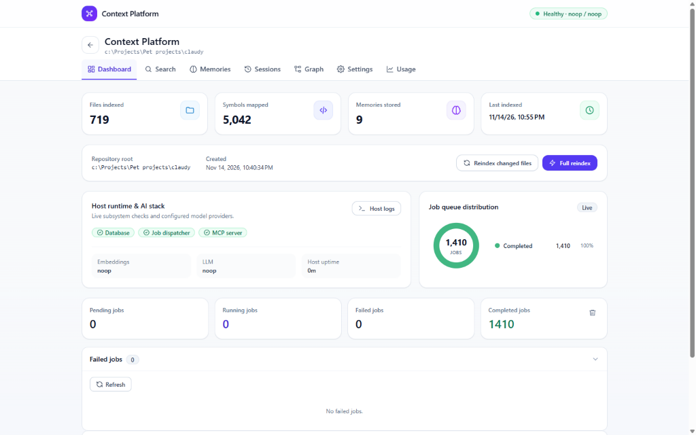
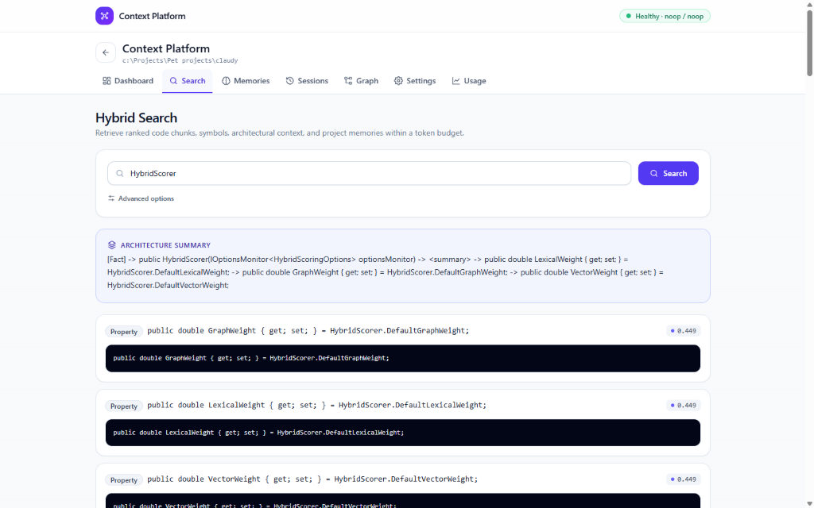
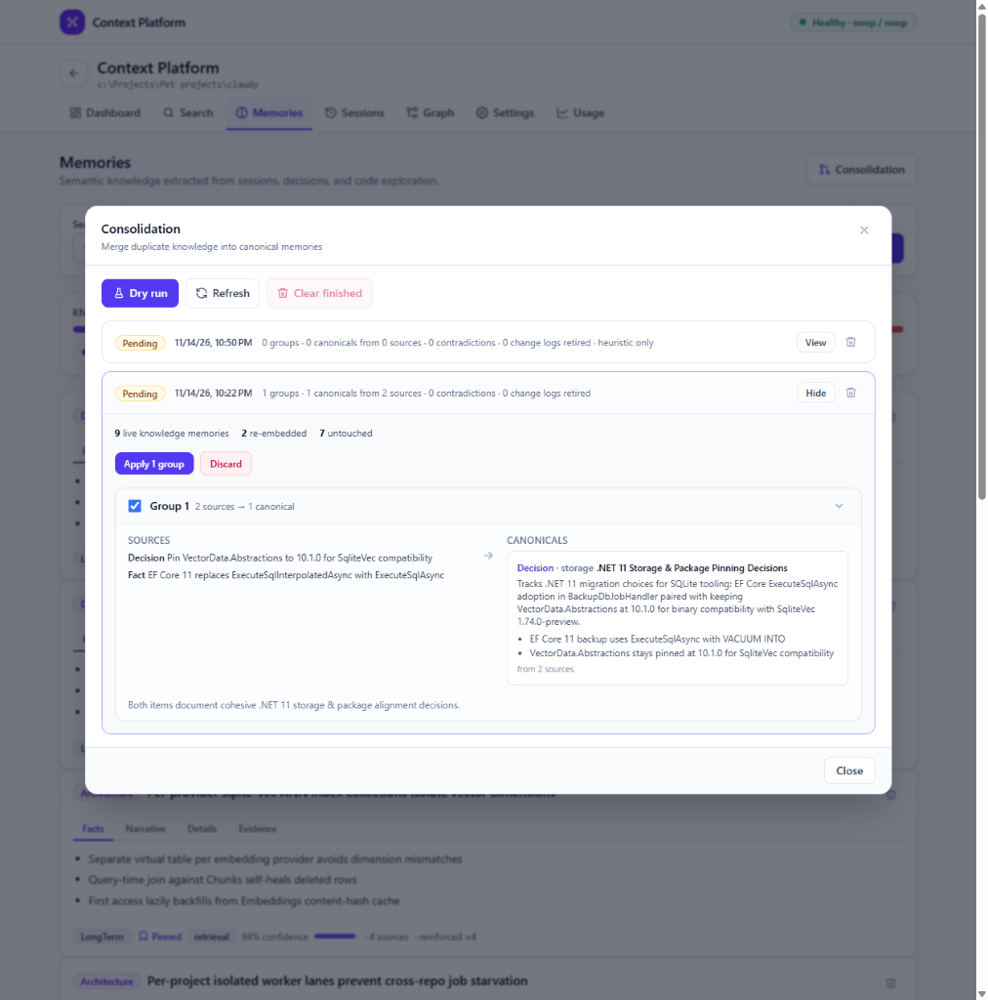

Persistent Memory, Hybrid Search & Call-Graph Blast Radius for AI Coding Agents.
Context Platform indexes your repository locally on .NET 11, exposes 17 targeted MCP tools and 6 Claude Code lifecycle hooks, packs exact context into a strict TokenBudget, and streams live observability to an Angular 22 + Tailwind CSS v4 dashboard.
/mcp)
6 Claude Hooks (/hooks/*)
5 AST Grammars (No LLM)
1.000 hit-rate@5
936 + 32 Passing Tests


Inside the Retrieval, AST Graph & Memory Engine
Switch modes below to inspect how Context Platform splits identifiers, packs strict token budgets, computes AST blast radius, and exposes all 17 MCP tools.

Lexical Precision Meets Vector & Graph Context
Exact symbol lookups and natural-language architecture queries blend together so top implementation hits outrank test noise cleanly.
- CamelCase / PascalCase / snake_case query splitting plus bounded LIKE fallback for 1–2 char tokens (id, db).
- Unscoped queries softly downrank tests/ files so production source code appears first unless explicitly scoped.
- LexicalOverlapReranker propagates reordered scores cleanly into ContextPackBuilder.

Consolidation & Code Verification Guard
Raw session hooks become structured facts, duplicate decisions merge automatically, and stale notes are flagged against the real code index.
- Captures Completed, Decisions, OpenIssues, and NextSteps automatically across /compact boundaries.
- MemoryRelationJudge deduplicates via vector cosine, Jaccard overlap, and shared strong code entities — even offline.
- MemoryCodeChecker verifies referenced symbols against the repository index (Verified, Refuted, Unknown).
Angular 22 + Tailwind CSS v4 Control Plane
Zero Angular Material runtime overhead — built with standalone OnPush components, Angular Signals, SignalR live streams, and custom SVG charts.
12 Engineering Pillars Built for Daily AI Coding
Every subsystem runs offline out of the box and scales cleanly with local or cloud AI models.
.NET 11 Modular Layers & End-to-End Benchmarks
Strict separation between domain entities, AST/graph/memory engines, SQLite storage, and the ASP.NET Core host — backed by 936 backend tests and real integration benchmarks.
ASP.NET Core 11 REST APIs, Streamable HTTP /mcp, 6 Claude hook endpoints, SignalR /hubs/indexing, plus Tailwind v4 + OnPush Angular 22 dashboard.
ContextEngine facade delegates to focused coordinators (ContextPackDelivery, NodeExpansion, Memory, Session) and JobDispatcher per-project lanes.
Tree-sitter AST parsers, SymbolDiffer hash preservation, thread-safe InMemoryGraphCache, HybridSearchEngine, ContextPackBuilder, and consolidation pipeline.
EF Core 11 + single SQLite WAL file (FTS5 + per-provider sqlite-vec tables), Microsoft.Extensions.AI providers, SecretRedactor, and safe Claude hook installer.
Plain entities, Result<T> error handling, streaming SHA-256 hashing, TokenEstimator, and SHA-256 per-project bearer token isolation.
Verified Retrieval & Suite Metrics
noop mode (validated by RetrievalQualityHarnessTests against real SQLite WAL). Semantic synonyms require configuring Ollama, Foundry Local, or OpenAI embeddings, and SavedTokens is a directional estimate (~4 chars/token minus repeated reads).